2009 After Burn Report
Welcome
While BRC Census has been producing reports since 2002, it is hard to compare recent data with reports from earlier years (before 2013) because of important differences in methodology, from a convenience sample of self-selected Census takers on-playa to a weighted online survey conducted after the Man burns.
About You
Attendance
Question: Which years did you attend Burning Man?

Age
Question: How old are you?
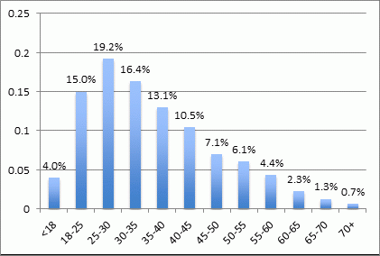
Sex
Question: Which sex was assigned to you at birth?

Artist
Question: Do you consider yourself an artist?
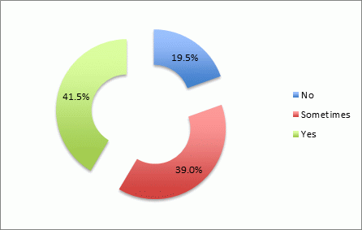
Race and Ethnicity
Question: Do you consider yourself to be a person of color?
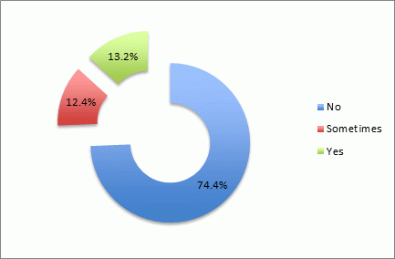
Question: Do you consider yourself to be white?
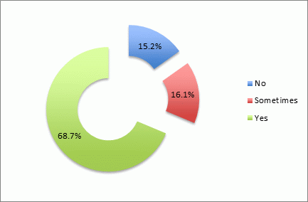
Residence
Question: Which best describes the place where you live?
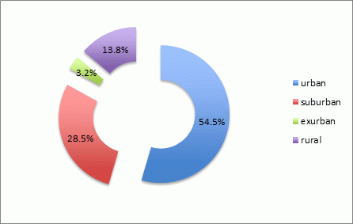
Voting
Question: Do you vote?

At Burning Man
Volunteering
Question: Did you volunteer with Burning Man outside of Black Rock City during the last year?

Returning
Question: Do you plan on returning to the playa?
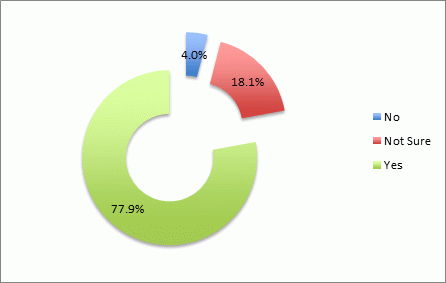
Transportation
Question: Which kinds of transportation got you to Burning Man?
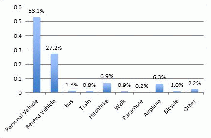
Activities
Question: What are you up to this year at Burning Man? Fill in all that apply.
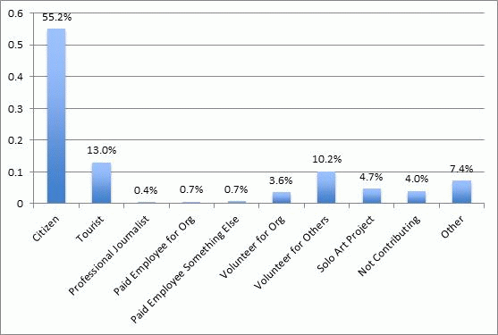
Values and Opinions
Values
Question: Which of the following values are important to you? Fill in all that apply.

Question: Which value is most important to you? Fill one.

Playa Supplies
Question: I wish there was a place to buy supplies on the playa.

Fibbing
Question: Have you ever lied to anyone about where you were going when you were going to be at Burning Man?
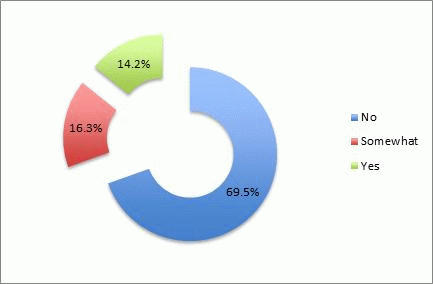
Reasons
Reasons for Coming
Question: What reasons first brought you to Burning Man? Fill in all that apply.

Question: What are the reasons you are at Burning Man now? Fill in all that apply.

Reasons for Residence
Question: What reasons first led you to reside where you do for the rest of the year? Fill in all that apply.
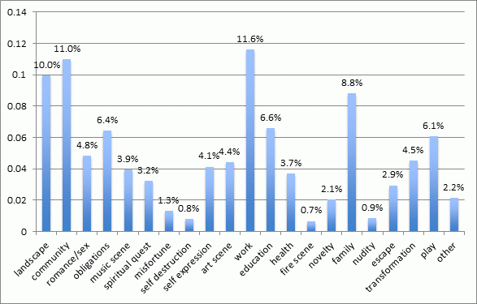
Questions: What are the reasons you reside there now?
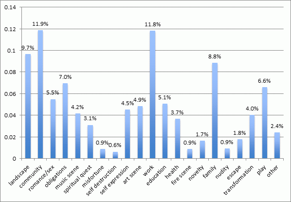